Rise Into Her · The Greece Edition
Eight days in Crete.
A small group retreat for women in Douliana, a hillside village in western Crete with about forty houses in it. Fifteen seats, one property, and eight days that ask nothing of you.
- Dates
- –
- Where
- Douliana, Crete
- Seats
- Fifteen, all taken
Why this exists
You are not tired because something is wrong with you.
You are the one everything runs through. It works because you are holding it, and holding it is the part nobody sees.
Eight days will not fix that. What it does is put you somewhere the weight is not yours for a week, with women in the same position, and let you find out what you think when nothing is asking for you.
You do not need to prepare. That is true of everything I run.
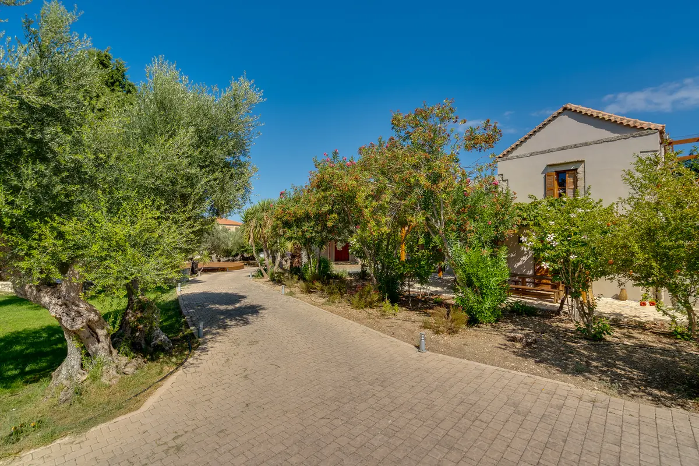
01 The lane into Douliana
The week
Eight days, and only two of them ask anything of you.
-
Mornings are movement, led by Kris. Strength, mobility, and whatever your body will actually do that day. It is not a class you can be behind in, because there is nothing to be behind.
-
Days alternate, and half of them are yours. One day is Crete: the gorge trails, the harbour at Chania, villages that have been there since the eighteenth century. The next has nothing on it at all, and nobody keeping track of where you went.
-
Twice in the week the group sits down together. That is the whole of what is asked of you. No workbook, no binder, nothing to report back on, and no round the room where everyone has to say something.
-
Evenings are dinner, cooked on site. The first night and the last night are the full group. In between, some nights that happens and some nights you eat when you are hungry and go to bed early, and nobody comments on it.
-
Then it is the Tuesday after. A week that only works while you are on it is a holiday. The point of this one is the phone call you take at home a fortnight later, and how differently you answer it.
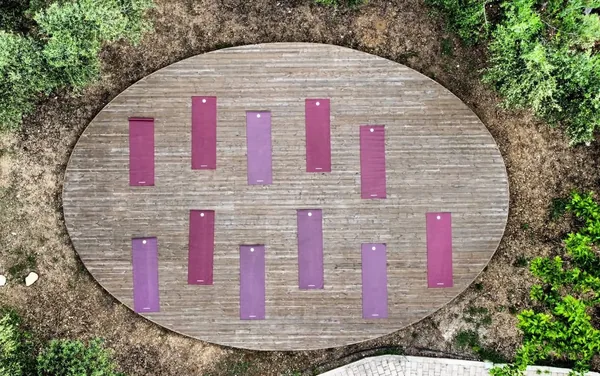
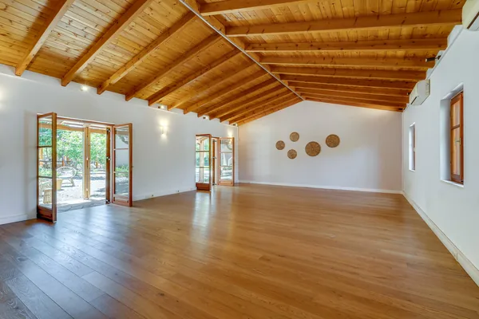
The excursion lineup is still being finalised. Everyone holding a seat gets the full schedule as it lands.
Read this part first
Who this is not for.
If you want a mastermind, this is not one. No curriculum, no framework, no deck.
If you need the week to produce something measurable, do not book it. You will spend eight days auditing the experience instead of having it.
If you cannot be unreachable for a stretch of days, book a year from now instead. Crete is nine hours ahead and the point of it is the distance.
I am happy to talk business while we are there. That is not what the week is for, and it is not what you are paying for.
The place
Douliana, Crete.
A village of about forty houses on a hilltop above Souda Bay, in the Apokoronas region of western Crete. Stone streets, oaks and cypress at the entrance, and an architecture that has not changed much since the eighteenth century.
It is a village people live in rather than a resort town. That is the whole reason it was chosen.
The sea Three beaches, and one of them is the quiet one
Almirida, Kalyves and Kera are all about fifteen minutes away. Kera is the quiet one and the last stretch is a forty minute walk in, which is exactly why it stays quiet.
Walking Trails leave from the village itself
They run through gorges and woodland and end at Agios Ioannis, a church built into a cave. You do not drive to the start of anything; you walk out of the door.
Chania The old town and the Venetian harbour
Half an hour away, and on the schedule at least once. Folklore museums, the harbour front, and the villages in between on the way back.
Getting in Chania International, and we collect you
CHQ is about 33 km from the house. Group transport to the property is included in both directions and the timings are further down this page.
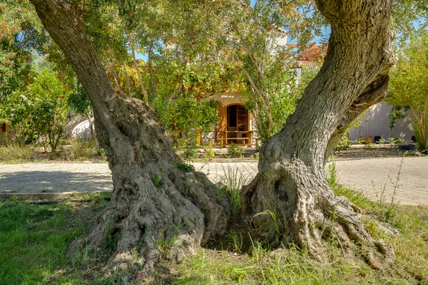
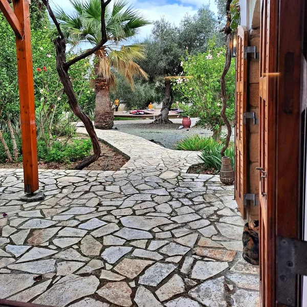
Where you stay
Armonia Retreat Center.
One house, in the middle of the village, and for eight days it is only ours. Fifteen guests, two to a room, twin beds, and every room has its own bathroom.
Kris and I are in the house too, which makes seventeen women on the property for the week.
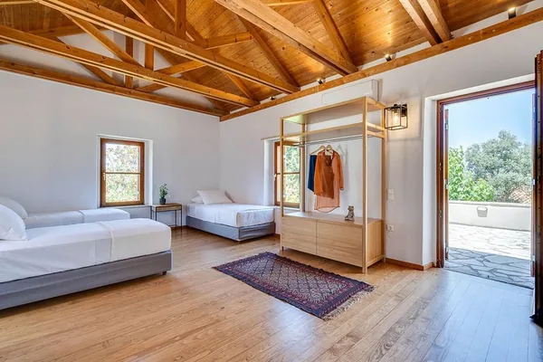
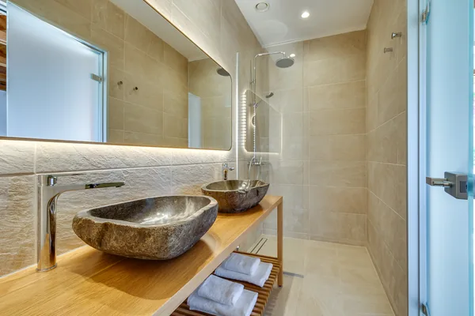
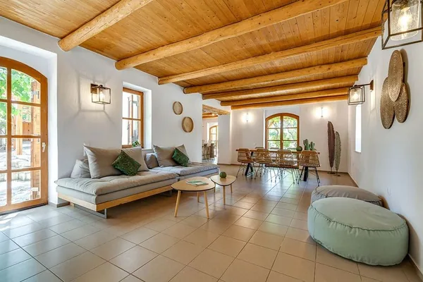
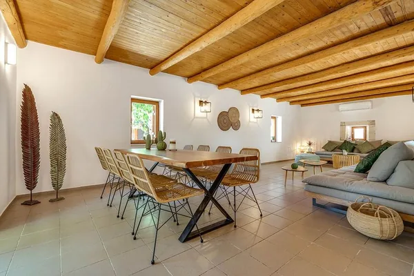
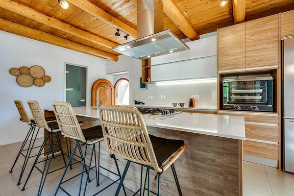
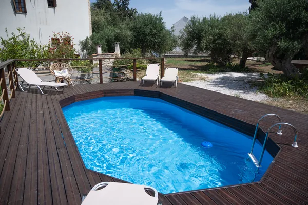
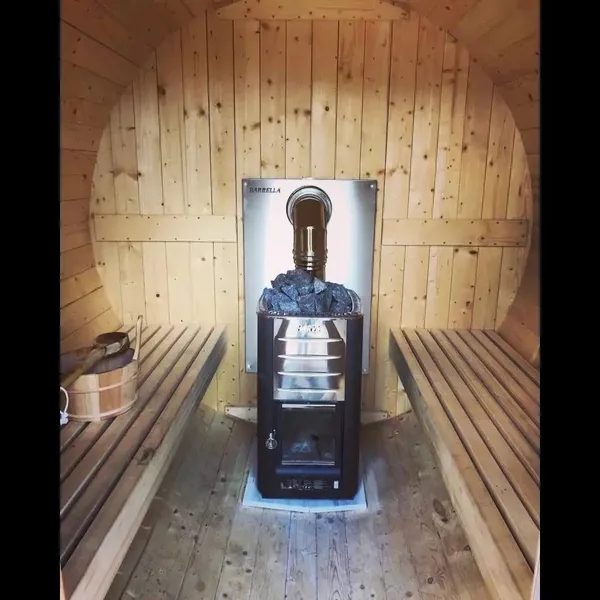
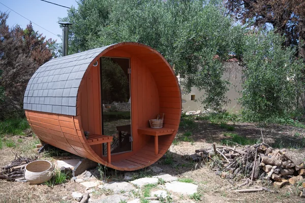

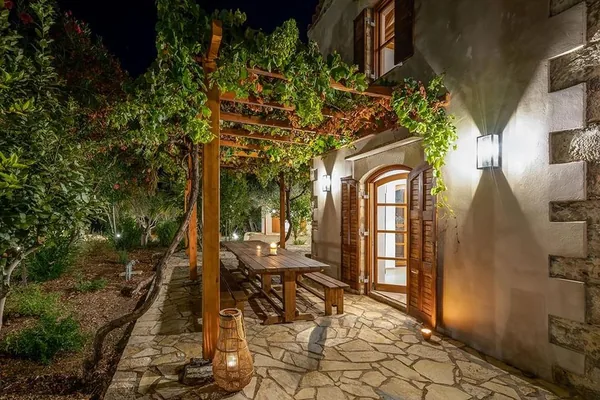
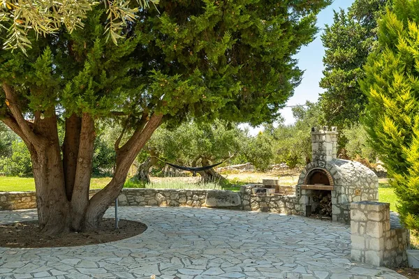
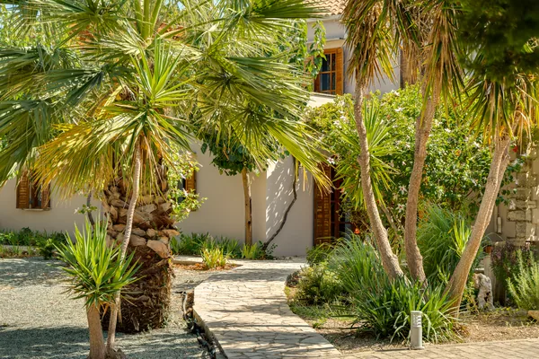
Rooms Shared, twin beds, en-suite, and no single option
Every room is shared, two to a room, twin beds, each with its own bathroom, air conditioning, linens and towels. There is no single room and no supplement to buy one: one room type, one price. If you are travelling with someone, say so when you book and you will be roomed together.
On site Pool, sauna, gym, studio, and a kitchen that stays open
A pool and a deck, a sauna indoors and a barrel sauna out in the olive grove, a gym, an indoor studio for the morning it rains, a lounge, a full kitchen, and outdoor dining under vine.
Grounds Four thousand square metres, in the middle of the village
Olive, palm and stone paths, a lawn with an old stone oven on it, and the circular deck the mornings happen on. You are not in a compound outside a town; the village is on the other side of the wall.
Meals Breakfast, lunch and dinner, cooked here
Every day, with Cretan ingredients, in the house. List anything you cannot eat when you book and it reaches the kitchen well before you land.
Photography by Armonia Retreat Center.
Who is running it
Two of us, and neither of us is a guru.
Cydnie Jocelyn
Brand and business development consultant
Fourteen years in corporate marketing, then a retreat that turned out to be the thing that ended that chapter. I left, I got baptised, and I built this out of obedience rather than a plan.
My consulting work is diagnostic and that is a different job than this one. Here I am the person who booked the property, chose the village, and will make sure the week actually works, so that nobody in the room has to be the one holding it. The longer version is on the About page.
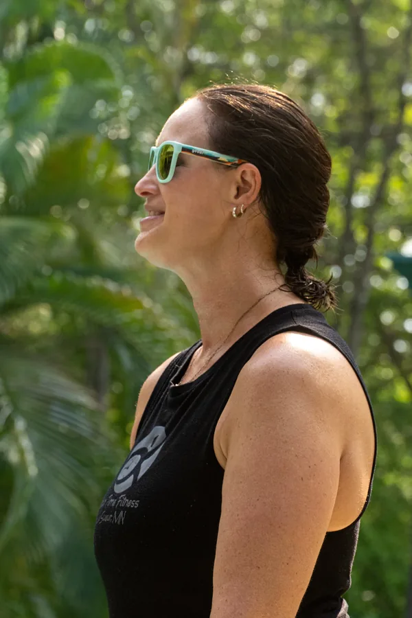
Kris Krause
Certified personal trainer · Your Time Fitness, Minnesota
Fifteen years working with women on strength and mobility, mostly women who had written off both. She was diagnosed with rheumatoid arthritis in her twenties and built her practice around what she learned doing it.
She leads the morning movement in Crete, and she meets you where your body is that morning, which on day four is a different place than it was on day one.
What the price covers
Everything once you land.
Your flight is the only thing you book yourself. If you want help finding the right one, ask once you have a seat and I will sit down with the routes with you.
Airfare is the number to plan for. Airlines have not opened August 2027 schedules yet. When they do, budget $1,000 to $2,000 round trip from Minneapolis depending on routing and how early you book. Better you hear it here than find it in a second tab.
- Seven nights at Armonia, shared room, en-suite
- Breakfast, lunch and dinner, every day
- Daily movement sessions with Kris
- All group sessions and excursions
- Pool and sauna, all week
- Round trip ground transport from CHQ
- Airfare is not included
- Travel insurance is not included
- Personal spending and anything outside the schedule is not included
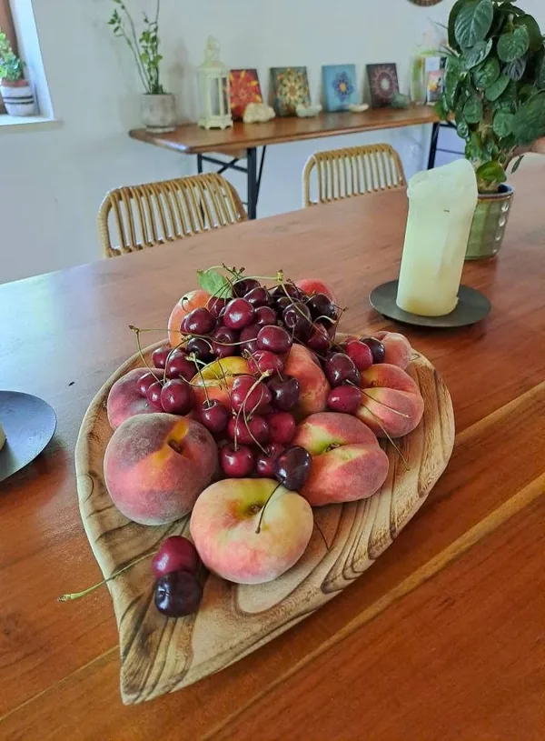
Before the number
What is actually stopping you.
Four things women say to me before they book. All four are reasonable.
I cannot be away that long.
Eight days once, against the fifty-one weeks you spend being the one everything runs through. The week is built so that nothing needs you in it.
I would not know anyone.
Most women come alone. That is the normal way to do this, not the brave version of it, and fifteen is small enough that by the second day you are not on the edge of anything.
I am not fit enough for it.
There is nothing to be fit enough for. Kris designs the movement around who is in the room. Some of the walking is on uneven ground, and if stairs and hills are a real concern, tell me before you book and I will be straight with you.
It is a lot of money.
It is, and the figure is below rather than after a call. Seven nights, every meal, all movement, every session and excursion, and both transfers. What you are actually buying is eight days in which nobody needs anything from you.
Full · Waitlist open
All fifteen seats are taken.
The price is below anyway, because you should be able to see what a thing costs before you decide whether to wait for it. Shared room, twin beds, private bathroom. One room type, one price, and no single occupancy option.
Choose how you would pay and you go on the list. When a seat opens I call the list in order, and if that opening comes on or before 6 September 2026, you get the early rate whatever the calendar says.
- Early rate, through 6 September 2026
- $3,265
Held for any seat that opens on or before that date.
- Standard rate, from 7 September 2026
- $3,450
Applies to seats that open after the early date passes.
No payment is taken to join the list. Picking a plan only tells me how you would pay if a seat comes up, and it is the same list either way.
Terms, in plain language
Before you book, know this.
- Deposit
- $500 holds your seat. It comes off the total, and it is not refundable.
- Balance
- Pay in full, or six monthly payments. If neither of those works, tell me and we will talk about it.
- Travel insurance
- Buy it, and buy it the day you book. Your deposit and your flights are both committed early. Insurance covers the things I cannot.
Getting there
Fly into Chania.
Your flight is the only thing you book yourself. Everything from the terminal onward is arranged, in both directions.
-
Book
Outbound 12 August
A day early, on purpose. International travel takes a day and arriving with the buffer is worth more than the night of hotel it costs you.
-
Land
Chania International, CHQ
Most cities connect through Athens. It is the closest airport and it is about 33 km from the house.
-
Be there by
3:00 PM, 13 August
That is the group transfer. It is the one time on the whole week that matters, which is why it is here and not in a footnote.
-
Then
We drive you in
Ground transport is included both ways. Once you hold a seat you get the full pre-travel guide: what to pack, what August does, and what to expect on arrival.
-
Home
20 August
Return transfer to CHQ. Book your flight out for any time that day and tell me which one.
Before you ask
The practical answers.
Are there still seats?
No. All fifteen are taken. The list is open and I call it in order when a seat opens, which does happen. If that opening comes on or before 6 September 2026, the early rate stands whatever the calendar says.
Is there a single room?
No. Every room is shared, two to a room, twin beds, each with its own bathroom. There is no single room and no supplement to buy one, so the price on this page is the price whoever you come with.
Can I come with a friend?
Yes, and you will be roomed together. Say so when you book. It does not change the price either way.
Can you accommodate how I eat?
Yes. List anything when you book and it gets to the kitchen well before you land. Meals are cooked on site with Cretan ingredients, so most things are straightforward.
How much is the flight?
Airlines have not opened August 2027 schedules yet. When they do, budget $1,000 to $2,000 round trip from Minneapolis depending on routing and how early you book. Airfare is not included, and I would rather you heard that here than found it in a second tab.
Do I need travel insurance?
It is not required and I would buy it anyway, on the day you book. The deposit is non-refundable and your flight will be booked months out. Insurance is the only thing covering either of those.
What is the phone signal like?
Fine. There is wifi in the house and you will have service in the village. Nobody is taking your phone off you; Crete is nine hours ahead of Minnesota and the distance does most of the work on its own.
Anything else?
Email me at hello@cydniejocelyn.com. A question you are sitting on for three weeks is worth two minutes of my time to answer.
Still not answered
Ask me the one that isn’t here.
A week away is a real decision and the questions above are the ones people ask out loud. If yours is the quieter one, about the money, or the flight, or whether you would be the wrong person in that room, send it.
It reaches me and I answer it myself, usually the same day. Asking puts you on no list and starts no sequence.
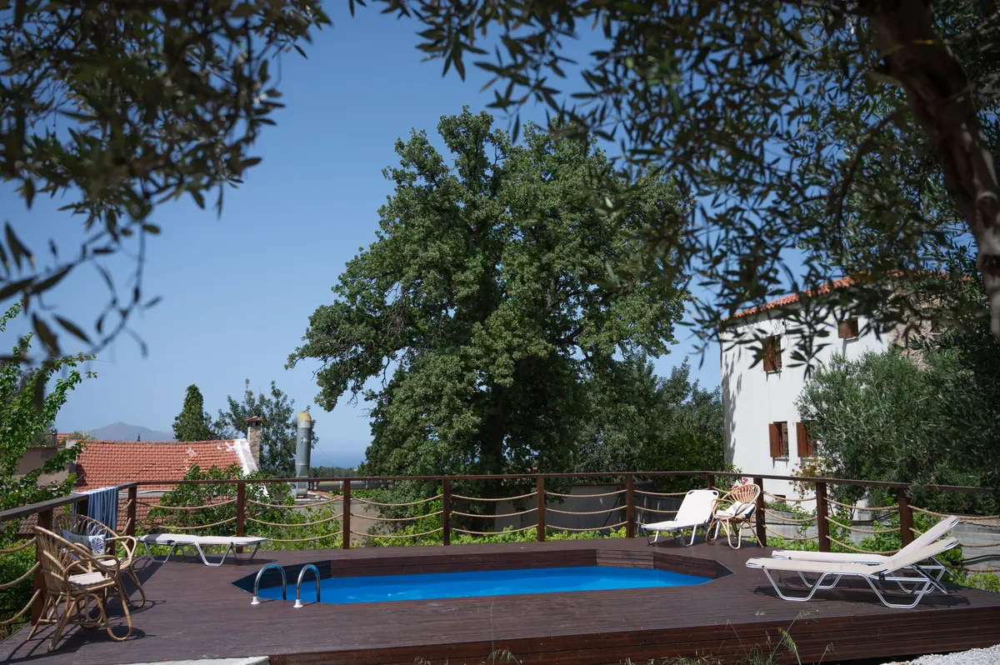
14 The deck, late afternoon
13 to 20 August 2027
Fifteen seats in Crete.
Fifteen is the number, not a tactic, and all fifteen are spoken for. Seats do open. The list is how they get filled, in the order people joined it.
Costa Rica ran in April 2026. What the women said about it, and Melissa saying it on camera, is on the retreats page.